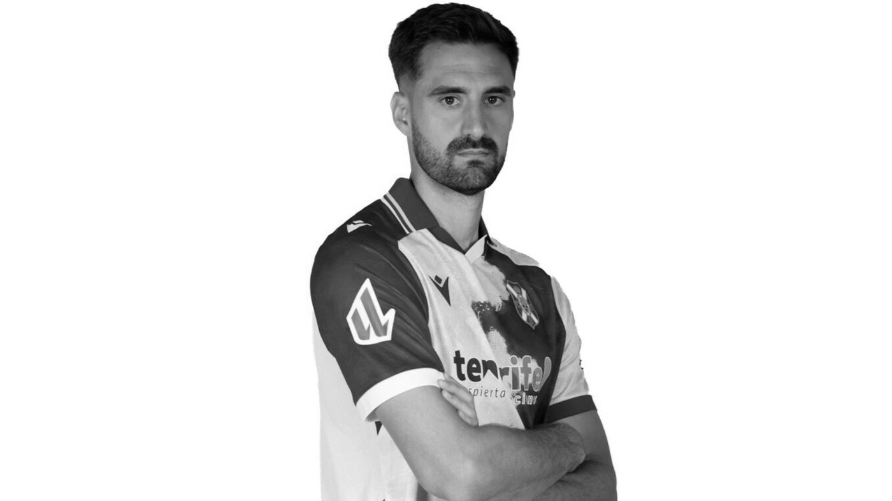

CD Tenerife footballer Jesús de Miguel dies after injury suffered against Andorra

Photo: CD TenerifeCD Tenerife announced on Tuesday the death of their forward Jesús de Miguel, aged 30. The player died at 8:00 at the Hospital Universitario Nuestra Señora de Candelaria, where he had been admitted on Monday after a heavy collision with the FC Andorra goalkeeper during a match.
The incident happened in the match Tenerife and Andorra played on Monday afternoon. Jesús de Miguel went for a loose ball in the opposition area and collided with the visiting goalkeeper, Jesús Owono. The referee stopped play and the match was suspended.
According to several media outlets, the player suffered a cardiorespiratory arrest on the pitch and the medical services managed to restore his pulse in the ambulance. Once in hospital, his neurological condition worsened overnight because of the head injury, and his death was certified early in the morning.
The club statement
CD Tenerife expressed their deep sorrow at the loss, conveyed their support to the family and asked for their privacy to be respected. The family thanked people for the messages of support they have received.
From Diario Xerecista we send our deepest condolences to the family, friends and team-mates of Jesús de Miguel, and to everyone at CD Tenerife. Rest in peace.
🇪🇸 Leer en español ← Back to home